15 September 2026 · Review only · Current local app · 1280 × 720 capturesSimplify the app outside the sale screen
Main finding: Products and printer settings contain the most removable clutter. The biggest improvement is less repeated text and fewer always-visible advanced options. Inventory, audit log and transaction entry screens are already comparatively simple.
Scope: Management, new-product registration, stock/receiving/movements, reports, audit log, settings, transaction/return entry, drawer, help and test-print preview. The sale screen and its checkout, coupon, customer, hold and payment flows are excluded.
First pass: remove repeated demo badges, introductory descriptions, duplicate headings/counts and the decorative drawer icon. Then reveal label-copy settings and advanced printer/product fields only when needed. Preserve validation, approvals, financial simulation notices, hardware limitations and report caveats.
Cluttered1. Products
Remove / simplify: Remove the repeated «صنف تجريبي» badges, the «مسجل محلياً» counter, and the three-box summary strip; keep one result count. Move «عدد الملصقات» into the label-print flow. Replace the persistent demo-edit/delete policy paragraph with contextual guidance when relevant.
Keep / limits: Keep name/barcode search, category/status filters, prices, low-stock/expiry/stopped flags and label printing.
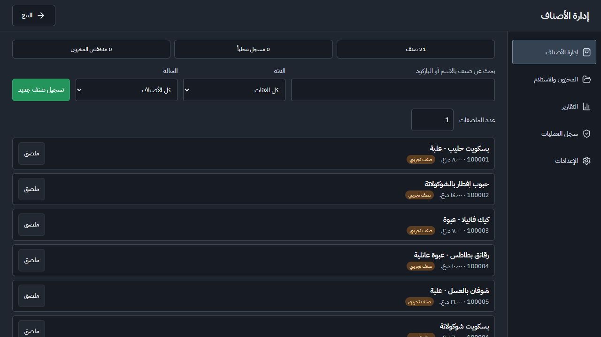
Too much introductory text2. New product
Remove / simplify: Remove «امسح باركود الصنف أو أدخله، ثم أكمل البيانات» and the paragraph listing required/optional fields. Mark required fields directly. Keep manager approval stated once beside Save. Put optional supplier/expiry/low-stock settings in an expandable section; keep current tax visible or summarized so it is never silently hidden. Show internal-barcode generation only when the item has no manufacturer code.
Keep / limits: Keep cost and opening stock easy to reach, barcode duplication validation, unit selection, and approval. The narrow form leaves much of the screen unused and pushes key fields below the fold; reducing prose helps but does not fully resolve its layout.
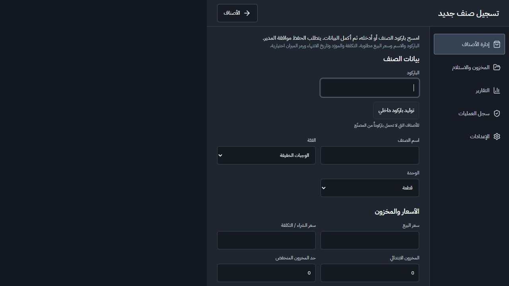
Already simple3. Stock levels
Remove / simplify: Remove the duplicate «حالة المخزون» heading beneath the tab with the same name. Shorten the main title to «المخزون» and the checkbox label to «منخفض فقط».
Keep / limits: Keep search, quantities and the low-stock filter. Do not add dashboards here.
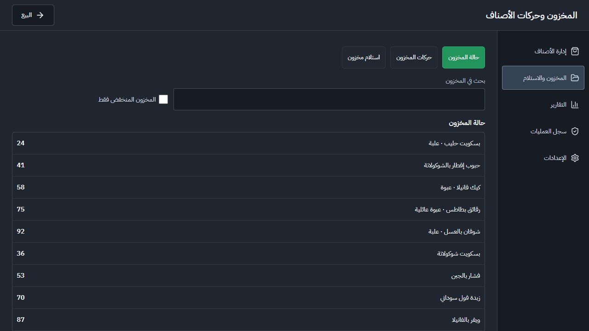
Mostly focused4. Receiving
Remove / simplify: Remove stock quantities from the product dropdown options; show current stock once beneath the selected product. Remove selling-price subtext from the default receiving form. Shorten «بحث أو تسجيل صنف» to «بحث»; offer registration after an unknown barcode is found. Shorten «استلام وإضافة للمخزون» to «تأكيد الاستلام».
Keep / limits: Keep purchase cost, quantity, separate supplier and delivery reference, selected product identity, and manager approval.
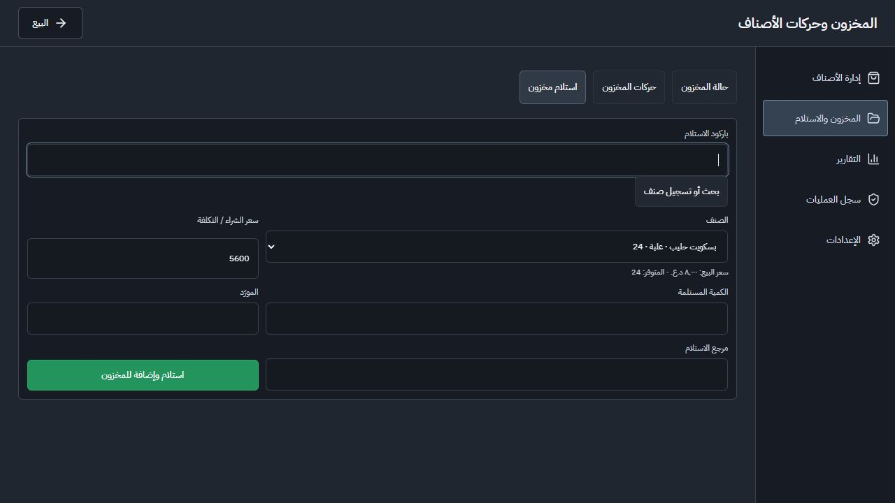
Simple empty state5. Stock movements
Remove / simplify: Remove «آخر الحركات» when the selected tab already identifies the view. Remove the thin empty bordered list container when there are no records; show one empty-state sentence.
Keep / limits: Keep movement type, quantity change, resulting balance and references when records exist. No populated movements were available.
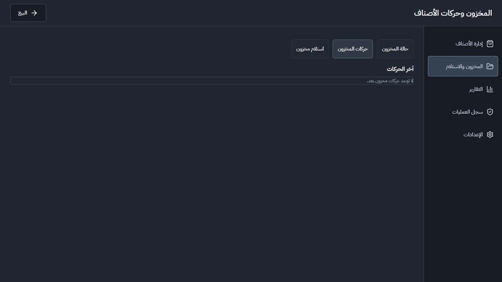
Unnecessary interruption6. Unsaved-change warning
Remove / simplify: Fix the warning that appears after simply opening Receiving and leaving without entering data. The source pre-fills receiveCost and then treats any receiveCost as dirty. Compare against the starting form state. Remove the repeated body heading and generic paragraph; keep one question plus «متابعة التحرير» / «تجاهل التغييرات».
Keep / limits: Keep protection for real edits. The header visually says «البيع» although its accessible name says return to editing; correct that mismatch. The draft was preserved after automatic approval review blocked discarding it.
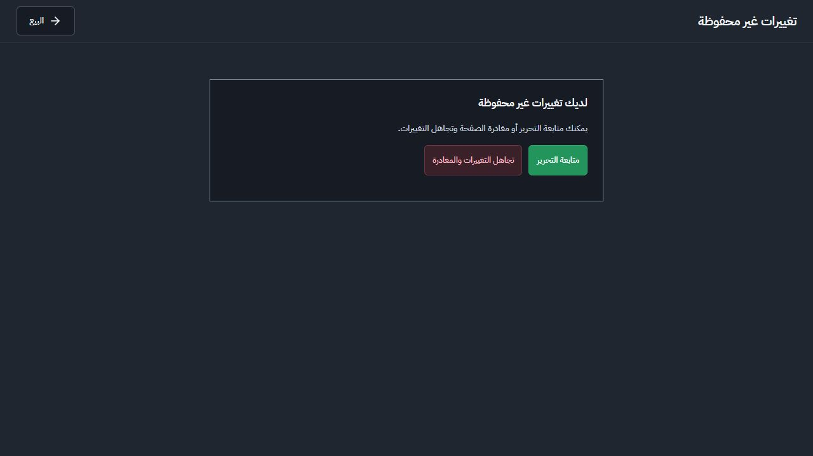
Overloaded for an empty day7. Report summary
Remove / simplify: Remove the standalone date above the date-range fields. Move the low-stock panel to Inventory, and the voided-sale count to sales details. Avoid multiple large empty panels when there are no transactions; use one clear empty state. State the profit qualification once beside the profit figure.
Keep / limits: Keep date range, report selection, CSV, net sales/refunds and estimated profit before operating expenses. Keep missing-cost/history-date warnings when they apply; retain one concise browser-data scope note.
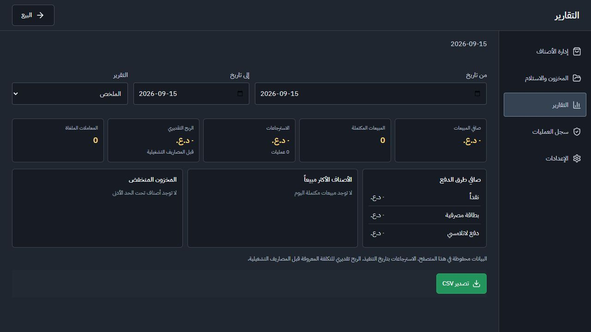
Light, with irrelevant footer text8. Detailed reports
Remove / simplify: Remove the generic profit/refund explanation from report types where it does not apply. Show the explanation only beside the affected metric or in report notes. Use «في الفترة المحددة» rather than today-specific copy when a range is selected.
Keep / limits: The captured sales detail is empty. Other report schemas were inspected in source, but populated tables were not visually verified; do not delete required report types or CSV exports.
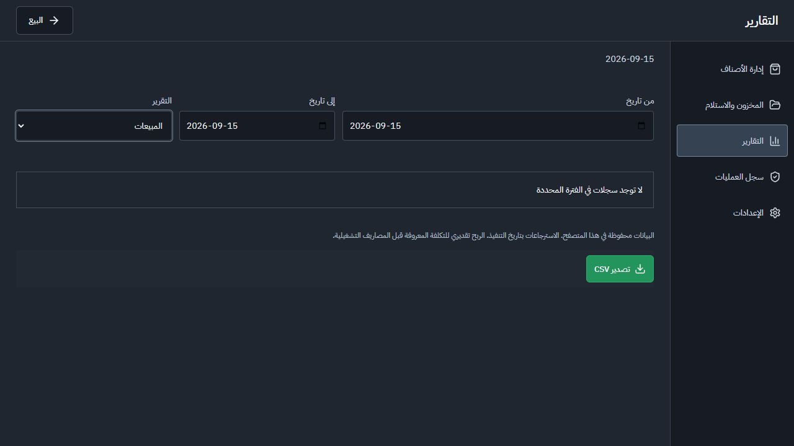
Already simple9. Audit log
Remove / simplify: Shorten «سجل العمليات والاعتمادات» to «سجل العمليات» to match navigation. No major removal is needed.
Keep / limits: Keep search and persisted audit records. Only its empty state was available.
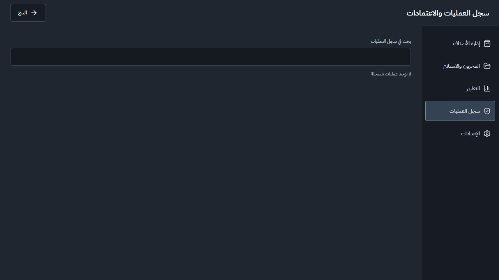
Highest simplification priority10. Printer settings
Remove / simplify: Remove the introductory Windows/USB/network sentence from the main settings page. Merge repeated printing-status explanations into one short notice: «حالة الجهاز غير مؤكدة؛ الطباعة عبر نافذة المتصفح». Collapse margin, paper feed and the reference-only printer-name field under advanced settings.
Keep / limits: Keep printing enable/disable, paper width, simulated drawer setting, Save and Preview accessible. Do not imply that an enabled browser setting proves hardware connection.
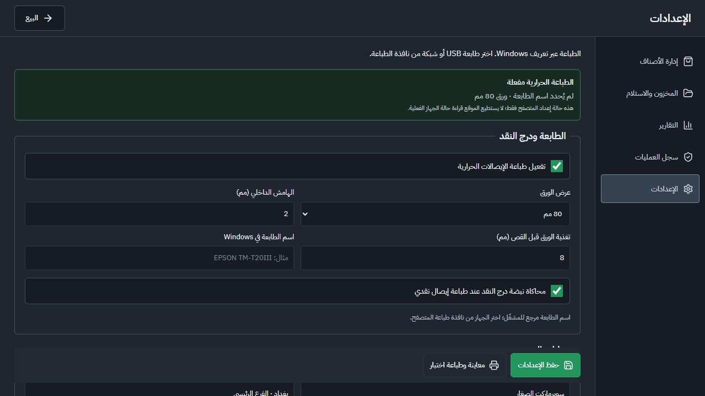
Too much setup guidance11. Store / receipt settings
Remove / simplify: Replace the long Windows setup paragraph and repeated hardware paragraph with an expandable «دليل إعداد الطابعة». Collapse store details and receipt appearance until opened; put font size and receipt prefix in advanced appearance. Shorten upload label to «اختيار شعار» and keep format limits as contextual help.
Keep / limits: Keep merchant details, tax number, logo/footer customization and the protected collapsed demo-maintenance section. Important printing limitations should remain available and briefly visible near printing.
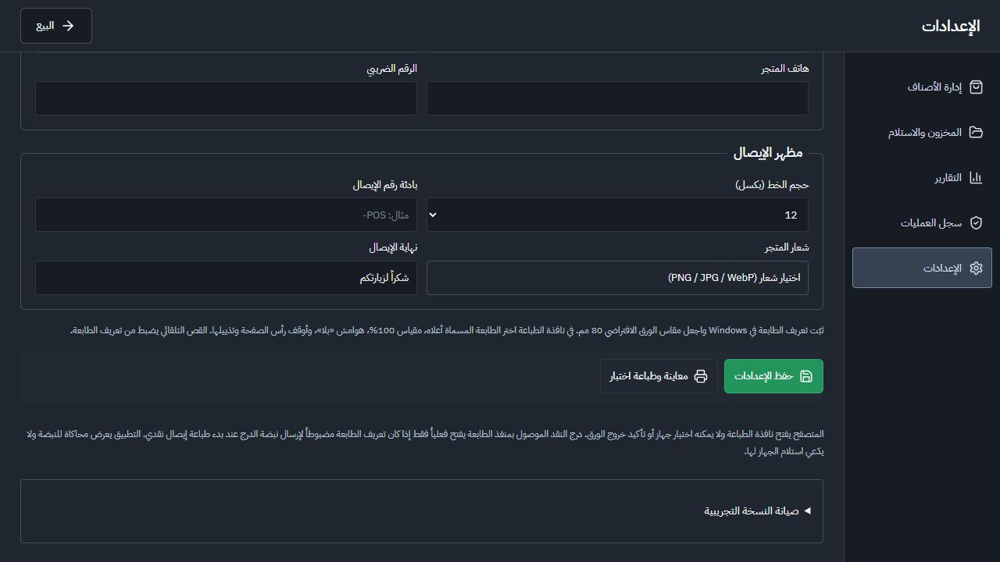
Already simple12. Sales history
Remove / simplify: Remove «أكمل عملية بيع أولاً» from the empty state; «لا توجد معاملات» is enough.
Keep / limits: Keep receipt search and the Sales/Returns tabs. There were no saved transactions, so populated rows, receipt actions and void confirmations were not visually reviewed.
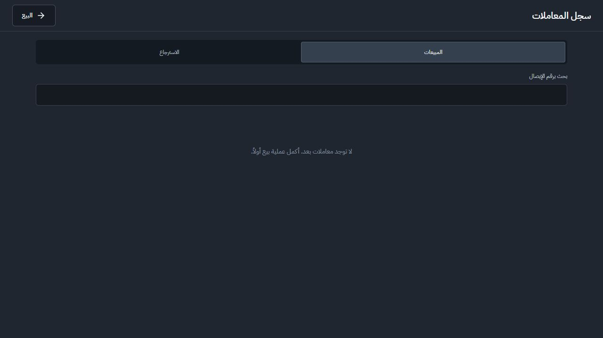
Already simple13. Returns history
Remove / simplify: Use the consistent label «الاسترجاعات». No significant controls need removal from this view.
Keep / limits: Keep receipt lookup, refund amounts, quantities, reason and approval in the actual refund workflow. The refund form could not be reached because no saved sales existed.
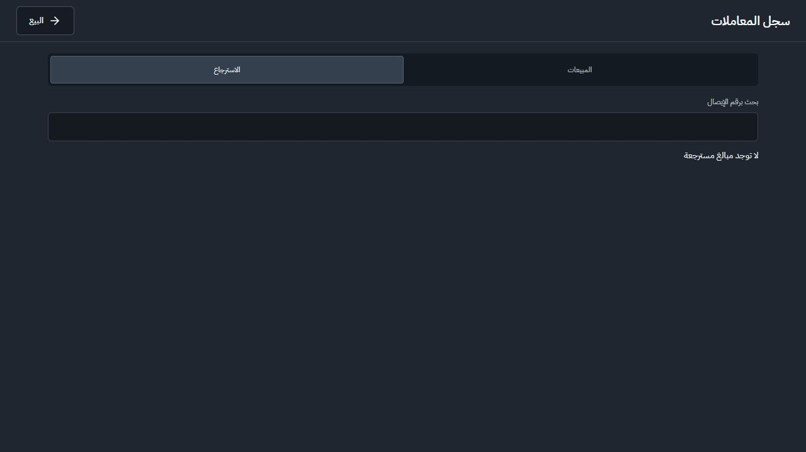
Decorative clutter14. Cash drawer
Remove / simplify: Remove the large decorative money icon and the second heading «فتح درج النقد يدوياً». The modal title, reason field and request button already explain the task.
Keep / limits: Keep the reason and manager approval; keep an explicit simulation notice in the relevant approval/result flow.
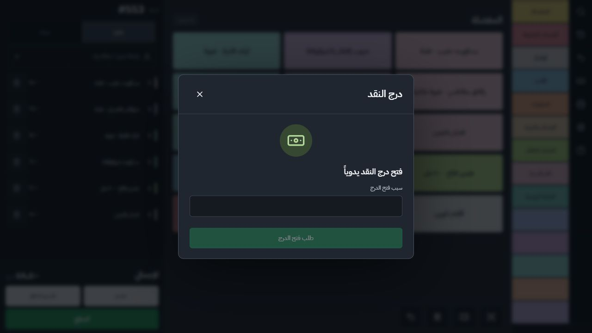
Some obsolete copy15. Help
Remove / simplify: Remove «الضرائب والعمر إعدادات تجريبية قابلة للاستبدال»; the age reference is inappropriate for this catalogue. Collapse demo barcodes, loyalty card and coupon codes under «رموز التجربة». Keep the page title short: «المساعدة».
Keep / limits: Keep the manager demo code findable, the simulation warning, printing/scanner compatibility and browser-only storage limitation. Help is the right place for support details removed from everyday screens.
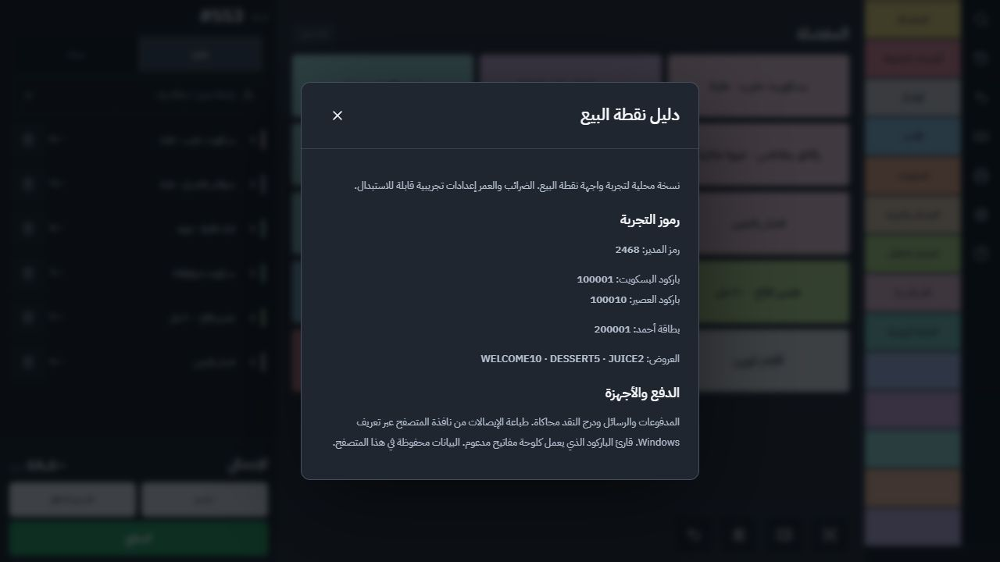
Broader than its task16. Dedicated printer shortcut
Remove / simplify: The shortcut opens the full settings component, including store details and receipt appearance. Default it to printer/drawer controls and collapse the other groups, sharing the same underlying settings.
Keep / limits: Keep the user-approved shortcut and its return directly to the sale screen. It does not need a separate settings implementation.
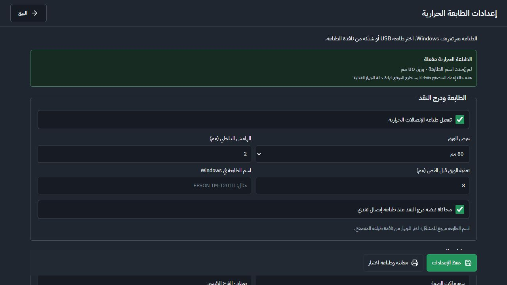
Instructions dominate preview17. Test print preview
Remove / simplify: Remove the full-width «رجوع من معاينة الطباعة» bar and use one clear return-to-settings control. Collapse the long print-setup instructions so the actual receipt appears higher. Shorten «معاينة وطباعة اختبار» at the entry to «معاينة اختبار» since that button opens a preview.
Keep / limits: Keep the explicit «معاينة فقط. لم يُرسل الإيصال إلى الطابعة» state, Print action and demo receipt marking. Physical output was not requested or tested. The iframe shows a visual scrollbar unlike the rest of the app.
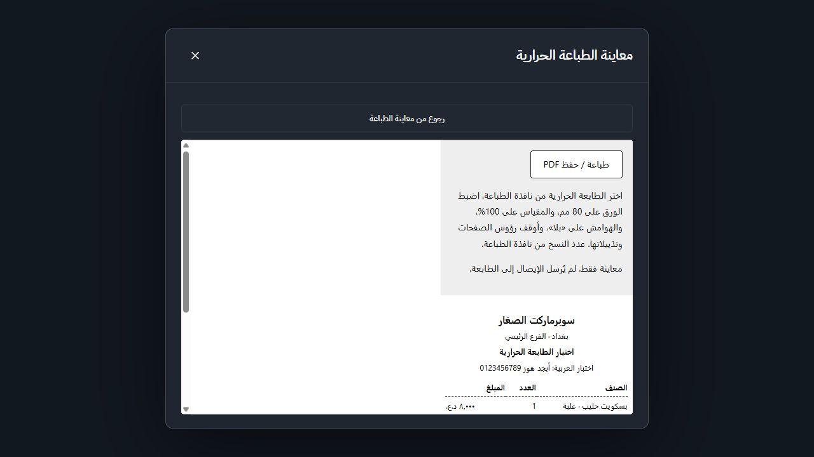
Evidence and limits
All screenshots were captured and inspected during this review. No app code, settings, transactions, stock or product records were changed. Only this review and the durable design preference in AGENTS.md were written. No regression suites were run because no application behavior was changed.
The current browser had no saved transactions, refunds or stock movements. Populated transaction/refund/approval states and report tables were therefore not fully audited. Source inspection supplements the receiving-warning diagnosis and report coverage, and is not presented as screenshot evidence. The original receiving tab was retained when automatic approval review blocked discarding its draft.
Accessibility cautions for the simplification pass
Keep persistent field labels and accessible names; do not replace them with placeholders or unexplained icons. Retain readable, concise warnings near relevant actions. Small muted help text in Products and Settings is a visible readability risk; contrast, screen readers, touch targets and keyboard completion need dedicated testing. Correct the mismatched «البيع» label in the unsaved-change dialog. Screenshots alone do not establish accessibility compliance.
Recommended next step
Start with Products and printer settings, then apply the small copy removals to the remaining screens.